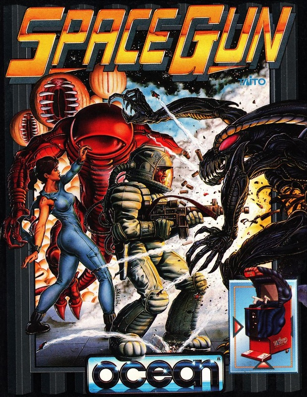
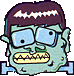
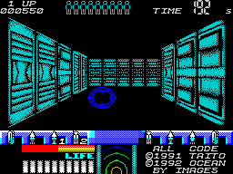

Space Gun


{kind=link}

| Publisher: | Ocean |
| Price: | £10.99 |
| Year: | 1992 |
| Source: | CRASH, Issue 96 |

‘I say we take off and nuke the entire site from orbit. It’s the only way to be sure...’ Aliens, who needs ’em, eh? All they do is abduct people, mutilate cattle and burst out of people’s chests. But fear not, gentle readers, ’cause MARK CASWELL’s become an honorary member of the Colonial Marines to kick some alien butt.

We’ve all seen movies like ET, Starman and Close Encounters of the Third Kind, where friendly aliens land on Earth and help mankind, The people who see these creatures from another world are unafraid and soon make friends with them.
What a load of crap. If you saw a little green man leap out of a spaceship in real life, you’d cack your panties and leg it. But the heroes of this game are a hardy breed who lug large, alien-splattering guns around, and they ain’t afraid to use em.
Space Gun is a one- or two-player game. so grab a pal and prepare to zoom around space as your team of crack commandos waste the deadly aliens, who’ve very kindly decided to try and take over our solar system.
THE FINAL FRONTIER

will be!
There are six levels, split into three or four sub-sections. The main part of your mission is to rescue a bunch of civilians, who were working quite happily until the bug-eyed beasties attacked their space station and spirited ’em off. At least one hostage from each section must be saved from a fate worse than the Ed’s singing (watch it sunshine — Ed), so go to it, trooper! Fail to free at least one hostage and you’ll be a laughing stock.
In true Aliens style, the hostages are found hanging from walls or ceilings. They’re wrapped in cocoons which you shoot away to free them. Once you’ve saved as many hostages as possible, sneak them past the aliens and deliver them safely to the space base. Simple, eh?
WE COME IN PEACE, SHOOT TO KILL
The game starts aboard the space station, viewed through the eyes of your character as you stalk the corridors in search of the alien scum. They certainly aren’t shy about coming forward — pretty soon you’re buried under several thousand pounds of alien warrior, industriously trying to rip your head off.
So now’s a good time to press the fire button and spray some lead around. The gun’s used by the time honoured tradition of whizzing the floating cursor around the screen and letting rip. But the aliens don’t sit and take it, they rush at you and attempt to either bite or slash your frail body. Of course, this lowers the old life meter and if you take too much damage you become alien din-dins.
IT’S LIFE, JIM, BUT NOT AS WE KNOW IT
There are several types of xenophobic creature, all bent on your destruction. Small, red, bug-like beasties hang from the ceiling and drop onto your bonce, while huge four-armed green monsters go straight for the throat. The red creatures are very often killed by a single burst of gunfire, the bigger monstrosities take longer to blow away. As you blast ’em, bits of flesh fly off, and if you’re lucky an arm parts company before you’re slashed to ribbons.
The carnage continues until you reach the Mother Allen on the sixth and final level. If you manage to pull all this off and emerge unscathed, you’re a jammy bast.
HE’S DEAD, JIM
Ocean are on a birrova winning streak, aren’t they readers? After the CRASH Smashed Hudson Hawk and Smash TV two issues ago, they pop up with this corker. I know the Operation Wolf format is as old as the proverbial hills, but it’s proved to be very popular with the punters (and certain journos).
Space Gun is no pushover. The aliens are mean muthas who take a heck of a lot of blasting before they die, which is more than can be said about the heroes. Game after game I was killed by aliens who leapt out of dark and dingy corners. But half the fun is the suspense created by not knowing when you’ll be mauled to death by a reject from the CRASH office (don’t put yourself down, Corky — Ed).
Images, the programming team, have done a wonderful job with the graphics — a rainbow of colours dazzle the eye but there’s very little colour clash.
Those of you who love this ‘gung-ho’ game style should take a look. Now if you’ll excuse me, I have some aliens to splatter.
MARK — 91%
Who’s this Damian Stones bloke then?
Introducing Damian Stones, Images programmer extraordinaire. He’s been programming since he was 12 and being paid to do it for about a year. Apparently, he’s a very nice man, and to prove it here’s his profile for all you girlie readers to droll over:
Age: 18
Sex: Yes please
Marital status: Eligible bachelor (see above)
Address: To be supplied to all you girlies out there (for an extortionate fee)
Height: 6ft (in platform shoes)
Eyes: Two (brown)
Build: Hunky
Fave game: Gyroscope
First computer: ZX81
Working hours: Too blinkin’ long!
Past history: Hunt for Red October and a helping hand in Back To The Future II
Career opinion: ‘It’s got its ups and downs; the up is the money, the down is the lack of it’
Hobbies: Drinking masses of lager, falling over, getting up, sleeping, looking at the pictures in sci-fi books
Opinion on price of eggs: ‘Too much like the price of bacon’ (Okay, stop the film, it’s getting silly!)
Wow, trip out city, maaa-n! This mean game has more colour than a rainbow wearing Jason Donovan’s technicolour dreamcoat (and Wozza’s neck — Ed)! it’s like Line Of Fire with lots more playability and much better graphics. Movement around the corridors is automatic so the trigger finger’s constantly at the ready to blast away the variety of meanness that pops its head around the corner. Space Gun could easily be renamed Kidney Bean Wars (has Nick gone potty? — Ed) because the things you fire at the aliens look just like red kidney beans! They add to the mass of colour created by the brilliant backgrounds and sprites — which are full screen size at times. There’s one dazzling game in here, too, and some neat touches — arms drop off, heads explode and the aliens still keep coming back for more! For a non-stop shoot-’em-up extravaganza, get Space Gun — it’s wicked!
NICK — 90%
RATING
A whole spectrum of colours (pardon the pun) and non-stop shoot-’em-up action!
| Presentation: | 89% |
| Graphics: | 91% |
| Sound: | 84% |
| Playability: | 89% |
| Addictivity: | 90% |
| Overall: | 91% |